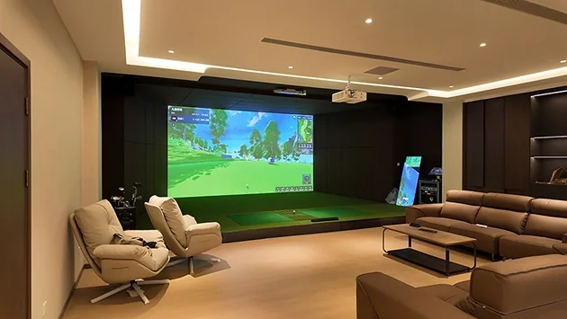

Plan your golf simulator installation.
A useful installation brief connects the players, room, equipment and local work. Start with clear measurements and a floor plan, then agree who will supply, install and commission each part of the system.

Measure the space you can actually use.
Record clear depth, width and height, with units. Measure height below the lowest beam, light fitting or duct. Mark doors, windows, columns and fixed furniture on a simple plan and include photographs.
Describe the tallest intended player, the clubs to be used and whether the bay must accommodate both left- and right-handed golfers. The hitting position, screen arrangement and full swing envelope need to be assessed together.
The catalog’s standard room references are 6.0 × 4.0 × 3.0 m for a flat screen and 6.0 × 5.5 × 3.0 m for a curved screen, in depth × width × height. These are configuration references; they do not approve an individual player’s swing clearance.
Agree the installation scope.
| Item | Published information |
|---|---|
| Equipment layout | Screen arrangement, detector position, projector mounting, computer and control console, hitting surface and selected accessories. |
| Floor and playing surface | Finished floor levels, mat or platform height, ball-return integration and transitions around the playing area. |
| Power and connections | Exact equipment nameplate requirements, compatible local supply, outlet locations, signal cables and network access. |
| Delivery access | Packed dimensions and weights, doors, lifts, stairs, unloading arrangements and movement to the installation space. |
| Local work | Who supplies and completes mounting, room preparation, electrical work, network connections and any site-specific requirements. |
| Commissioning and support | Setup, calibration, operating checks, handover information, warranty and the process for reporting a problem. |
Check the accessories as part of the room.
A motion platform changes the finished hitting height and has its own dimensions, weight and electrical requirements. An automatic ball return depends on the floor and collection arrangement. A touch console needs a usable position that keeps circulation clear.
For example, the DGPT001 catalog lists a 230 V, 50 Hz supply. Do not assume that every component uses the same supply or connection: confirm the exact equipment specified for your destination.
For multiple commercial bays, plan seating, circulation and player separation alongside each bay rather than multiplying a minimum room footprint.
Use a clear handover checklist.
- Match the delivered components to the agreed packing list and record any visible delivery damage.
- Have the installation team confirm equipment positioning, mounting, connections and player clearance.
- Check detector setup, calibration, image alignment, controls and the supplied software modes with the installer.
- Record software access, operator instructions, support contacts and the agreed acceptance outcome.
Discuss the equipment and your project.
Share your destination, floor plan, clear dimensions and the equipment you already have.